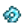

Cockle
| Cockle | ||||||||||||||||||||||||||||||||||
| A common saltwater clam. | ||||||||||||||||||||||||||||||||||
| Information
| ||||||||||||||||||||||||||||||||||
| Source | ||||||||||||||||||||||||||||||||||
| Season | ||||||||||||||||||||||||||||||||||
| Size (inches) | 1–5
| |||||||||||||||||||||||||||||||||
| XP |
| |||||||||||||||||||||||||||||||||
| Energy | Inedible | |||||||||||||||||||||||||||||||||
| ||||||||||||||||||||||||||||||||||
| ||||||||||||||||||||||||||||||||||
The Cockle is a fish that can be caught using a Crab Pot in any saltwater body of water. It can also be foraged from the Beach or randomly found at the Traveling Cart for  150–1,000g. Like all fish caught from the crab pot, it cannot be eaten unless it is used in a Cooking recipe.
150–1,000g. Like all fish caught from the crab pot, it cannot be eaten unless it is used in a Cooking recipe.
Gifting
| Villager Reactions
| |
|---|---|
| Neutral | |
| Dislike | |
| Hate | |
Bundles
A Cockle is an option for the  Crab Pot Bundle in the Fish Tank.
Crab Pot Bundle in the Fish Tank.
Recipes
| Image | Name | Description | Ingredients | Energy / Health | Recipe Source(s) | Sell Price | |||
|---|---|---|---|---|---|---|---|---|---|
| Maki Roll | Fish and rice wrapped in seaweed. |
|
|||||||
| Quality Fertilizer | Improves soil quality, increasing your chance to grow quality crops. Mix into tilled soil. | N/A | |||||||
| Sashimi | Raw fish sliced into thin pieces. |
|
Tailoring
Cockle can be used in the spool of the Sewing Machine to create the dyeable Sailor Shirt.
Fish Pond
Cockles can be placed in a Fish Pond, where they will reproduce every 2 days. The initial pond capacity is 3 fish, but the capacity can be increased to 10 by completing three quests. Typical output includes light gray Cockle Roe, Seaweed, and various Trash items, but more valuable items are possible starting at population 5.
| Pond Capacity | Quest Item | Fishing XP Granted | |
|---|---|---|---|
| Before Quest | After Quest | ||
| 3 | 5 | 5 Clay | 30 |
| 5 | 7 | 10 Bug Meat or 5 Quartz | 30 |
| 7 | 10 | 1 Sea Urchin, 5 Solar Essence, or 1 Wild Bait | 30 |
| Item(s) Produced | Fishing XP Granted | Population | % of Items | Overall Daily Chance |
|---|---|---|---|---|
| 12 | 1-4 | 13% | 3-6% | |
| 5-8 | 12% | 6-9% | ||
| 9-10 | 11% | 9-10% | ||
| 10 | 1-4 | 9% | 2-4% | |
| 5-8 | 9% | 5-7% | ||
| 9-10 | 8% | 7-8% | ||
| 10 | 1-4 | 8% | 1.9-4% | |
| 5-8 | 7% | 4-6% | ||
| 9-10 | 6% | 6% | ||
| 10 | 1-4 | 4% | 1-2% | |
| 5-8 | 4% | 2.1-3% | ||
| 9-10 | 3% | 3% | ||
| 10 | 1-4 | 4% | 0.9-1.9% | |
| 5-8 | 4% | 2-3% | ||
| 9-10 | 3% | 3% | ||
|  Broken CD (1) | 10 | 1-4 | 4% | 0.9-1.8% |
| 5-8 | 3% | 1.9-3% | ||
| 9-10 | 3% | 3% | ||
| 10 | 1-4 | 4% | 0.9-1.7% | |
| 5-8 | 3% | 1.8-3% | ||
| 9-10 | 3% | 3% | ||
| 13 | 5-8 | 6% | 4-5% | |
| 9-10 | 6% | 5-6% | ||
| 16 | 5-8 | 5% | 3-4% | |
| 9-10 | 4% | 4% | ||
| 10 | 9-10 | 7% | 6-7% | |
| 14 | 9-10 | 2% | 1.7-1.9% | |
| Nothing | 1-4 | 54% | 89-78% | |
| 5-8 | 47% | 71-58% | ||
| 9-10 | 43% | 50-46% |
Quests
The Cockle is not used in any quests.
History
| Foraging | |
|---|---|
| Basic | Sap |
| Spring | Common Mushroom • Daffodil • Dandelion • Leek • Morel • Salmonberry • Spring Onion • Wild Horseradish |
| Summer | Fiddlehead Fern • Grape • Red Mushroom • Spice Berry • Sweet Pea |
| Fall | Blackberry • Chanterelle • Common Mushroom • Hazelnut • Wild Plum |
| Winter | Crocus • Crystal Fruit • Holly • Snow Yam • Winter Root |
| The Beach | Clam • Cockle • Coral • Mussel • Nautilus Shell • Oyster • Rainbow Shell • Sea Urchin • Seaweed |
| The Mines | Cave Carrot • Purple Mushroom • Red Mushroom |
| The Desert | Cactus Fruit • Coconut |
| Skull Cavern | Dinosaur Egg • Fiddlehead Fern |
| Ginger Island | Ginger • Magma Cap |